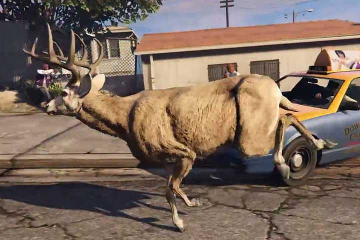
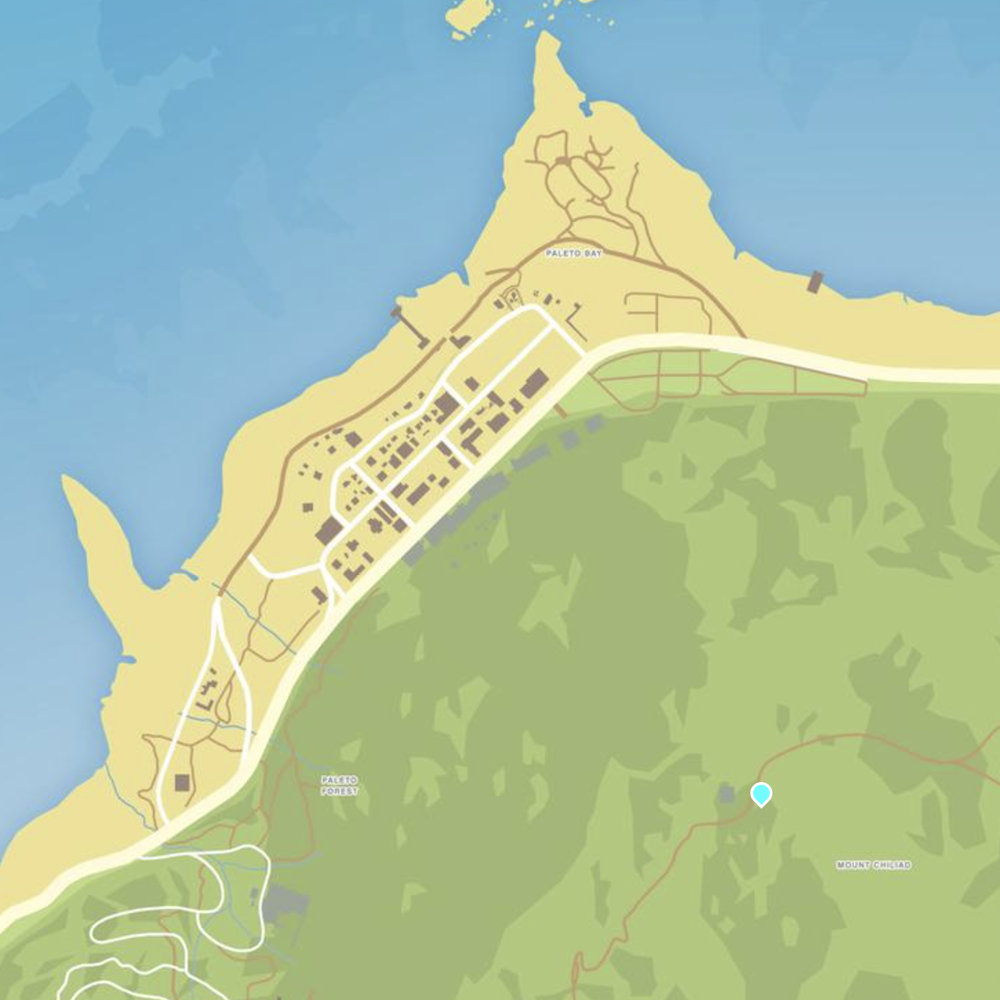

5 Nature Documentary
//general introduction about the creation of a synthetic forms of nature, ecological issues, creation of virtual sublime, flora and fauna that are usually props that become the focus of the player’s explorations, “virtual world naturalism”…
San Andreas Streaming Deer Cam by Brent Watanabe
 artwork text
Getting There
 Mount Chiliad is located in the Chiliad Mountain State Wilderness, and it is the tallest mountain in the game at 798m above sea level. The state park is home to lots of wildlife such as deer and mountain lions.
Tutorial
Preparation and Setup
Install Windows 11
Download and install Steam (with a copy of GTA V or buy the game if you do not have it. GTA V is 100+ GB so it will take a few hours depending on your internet connections)
Download Script Hook V, go to the bin folder and copy
dinput8.dllandScriptHookV.dllfiles into your GTA V directoryC:\Program Files (x86)\Steam\steamapps\common\Grand Theft Auto VDownload Script Hook V dot net, copy the
ScriptHookVDotNet.asifile,ScriptHookVDotNet2.dllandScriptHookVDotNet3.dllfiles into your GTA V directoryC:\Program Files (x86)\Steam\steamapps\common\Grand Theft Auto VCreate a new folder in GTA V directory and call it “scripts”.
Download and install Visual Studio Community (free version of VS). Open Visual Studio and check the .NET desktop development package and install it
Run GTA V and test if Script Hook V is working by pressing
F4. This should toggle the console view.[Optional] copy a game save file to skip the story mode. Extract the content of the file and copy both files SGTAXXXXX and SGTAXXXXX.bak in Documents/GTA V/Profiles/YYYYYYYY/
Creating a Mod File
Open Visual Studio
Select File > New > Project
Select Visual C# and Class Library (.NET Framework)
Give a custom file name (e.g. moddingTutorial)
Rename public class Class1 as “moddingTutorial” in the right panel Solution Explorer
In the same panel go to References and click add References… > Browse > browse to Downloads
Select ScriptHookedVDotNet >
ScriptHookVDotNet2.dllandScriptHookVDotNet3.dlland add themAlso add
System.Windows.formsAlso add
System.DrawingIn your code file add the following lines on top:
- Modify class moddingTutorial to the following:
namespace moddingTutorial
{
public class moddingTutorial : Script
{
public moddingTutorial()
{
this.Tick += onTick;
this.KeyUp += onKeyUp;
this.KeyDown += onKeyDown;
}
private void onTick(object sender, EventArgs e)
{
}
private void onKeyUp(object sender, KeyEventArgs e)
{
}
private void onKeyDown(object sender, KeyEventArgs e)
{
if (e.KeyCode == Keys.H)
{
Game.Player.ChangeModel(PedHash.Cat);
}
}
}
}Save file
Go to Documents > Visual Studio > Project > moddingTutorial > moddingTutorial >
moddingTutorial.csCopy the .cs file in the GTA V directory inside the scripts folder
Open GTA V, run the game in Story Mode (mods are only allowed in single player mode, not in GTA Online) and press ‘H’ to see if the game turns your avatar into a cat
Note: every time you make changes to your .cs file in the scripts folder you can hit
F4to open the console, typeReload()in the console for the program to reload the script and test again the changes.
onTick, onKeyUp and onKeyDown
The main events of Script Hook V Dot Net are onTick, onKeyUp and onKeyDown. Script Hook V Dot Net will invoke your functions whenever an event is called.
The code within the onTick brackets is executed every interval milliseconds (which is by default 0), meaning that the event will be executed at every frame, for as long as the game is running.
private void onTick(object sender, EventArgs e)
{
//code here will be executed every frame (or per usef defined interval)
}If your function is written inside onKeyDown (withiin the curly brackets following onKeyUp(object sender, KeyEventArgs e){}), your code will be executed every time a key is pressed. If your function is written inside onKeyUp, your code will be executed every time a key is released.
private void onKeyUp(object sender, KeyEventArgs e)
{
//code here will be executed whenever a key is released
}
private void onKeyDown(object sender, KeyEventArgs e)
{
//code here will be executed whenever a key is pressed
} We can specify which code is executed based on what keys are pressed/released
Change Player Model
The player character is controlled as Game.Player. Game.Player can perform different functions, including changing the avatar model, and performing tasks.
Change the 3D model of your character by using the ChangeModel function.
The function needs a model ID, in order to load the model file of our game character.
You can browse through this list of models to find the one you want to try: https://wiki.gtanet.work/index.php/Peds
These models are all PedHashes, basically ID numbers within the PedHash group. Copy the name of the model below the image and add it to PedHash.
For example if you choose the model Cat, you’ll need to write PedHash.Cat.
To change the model of your player character into a cat you can write the following function:
add it in your .cs file in the onKeyDown event, triggered by the pressing of the ‘h’ key:
Example code
using System;
using System.Collections.Generic;
using System.Linq;
using System.Text;
using System.Threading.Tasks;
using GTA;
using GTA.Math;
using System.Windows.Forms;
using System.Drawing;
using GTA.Native;
namespace moddingTutorial
{
public class moddingTutorial : Script
{
public moddingTutorial()
{
this.Tick += onTick;
this.KeyUp += onKeyUp;
this.KeyDown += onKeyDown;
}
private void onTick(object sender, EventArgs e) //this function gets executed continuously
{
}
private void onKeyUp(object sender, KeyEventArgs e)//everything inside here is executed only when we release a key
{
}
private void onKeyDown(object sender, KeyEventArgs e) //everything inside here is executed only when we press a key
{
//when pressing 'H'
if(e.KeyCode == Keys.H)
{
//change player char into a different model
Game.Player.ChangeModel(PedHash.Cat);
}
}
}
}
Tasks
Our character can be controlled by our script, and given actions that override manual control of the player. These actions are called Tasks and in order to assign tasks to our characters we have to define our Game.Player as Game.Player.Character. The Game.Player.Character code gets the specific model the player is controlling.
Now we can give tasks to the character by adding the Task function: Game.Player.Character.Task.
Finally we can specify what task to give the character by choosing a task from TaskInvoker list of possible actions.
Jump:
Wander around:
Hands up for 3000 milliseconds:
Task Sequences
You can create sequence of multiple tasks by using TaskSequence and the PerformSequence function.
Create a new TaskSequence with a custom name, add tasks to it with AddTask, close the sequence with Close and then call Task.PerformSequence to perform the sequence.
Random
We can add randomness by using a randomly generated number, which makes things outside of thepredefined programme controlled by us and introduces more autonomous behaviours. We use the Randomfunction to create a randomly generated number between our minimum and maximum parameter (if only one parameter is inserted, the minimum is 0).
Random rnd = new Random();
int month = rnd.Next(1, 13); // creates a number between 1 and 12
int dice = rnd.Next(1, 7); // creates a number between 1 and 6
int card = rnd.Next(52); // creates a number between 0 and 51Let’s create a number to generate a random duration between 1 and 6 seconds, for the HandsUp task.